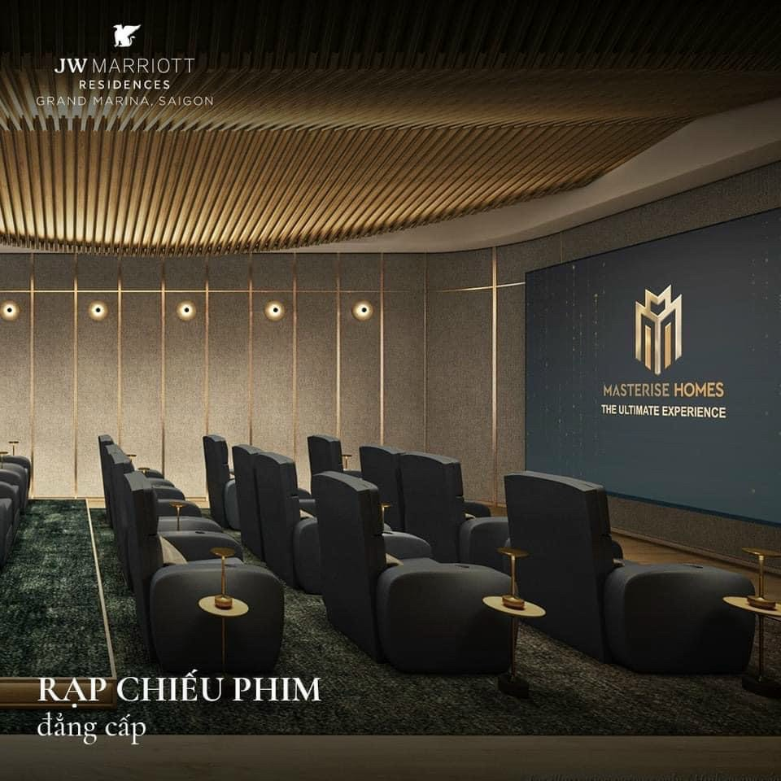
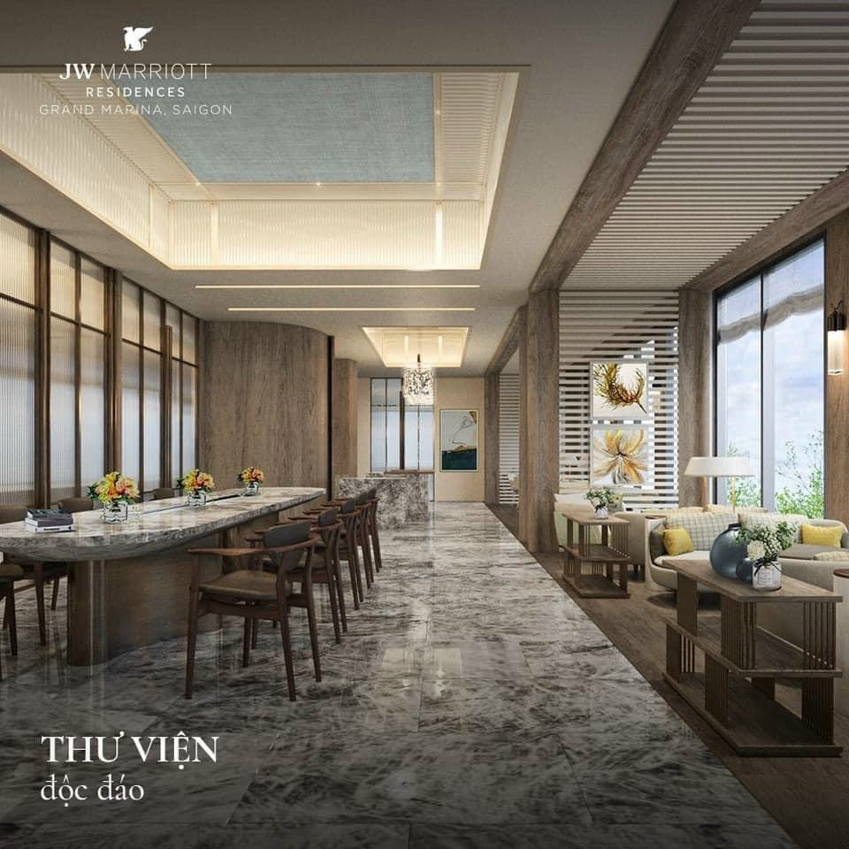
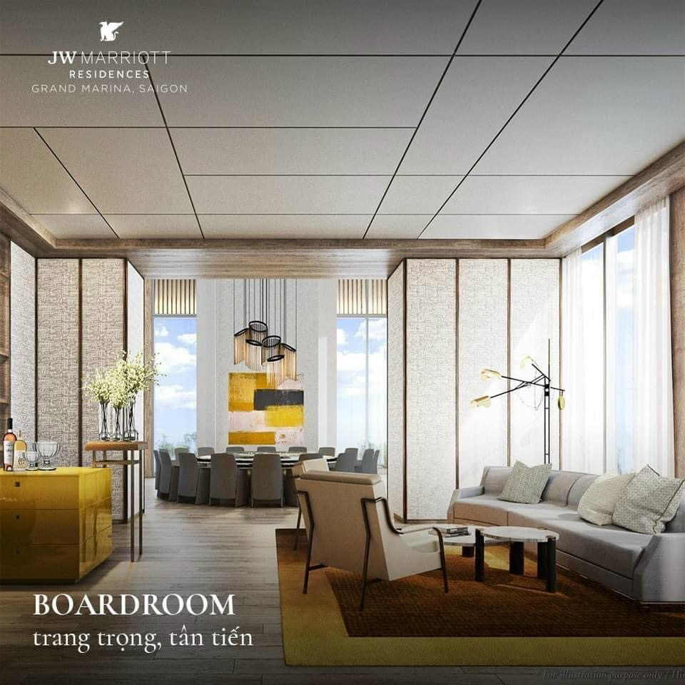
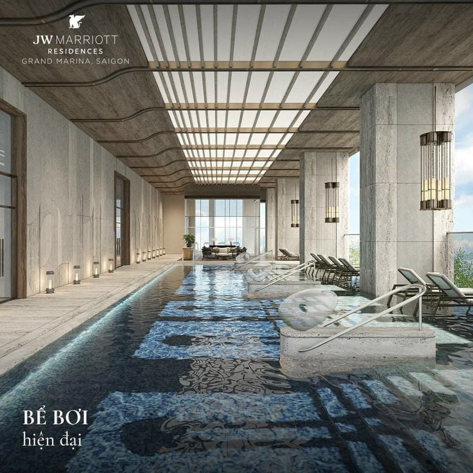

Vị trí được xem là yếu tố quan trọng nhất quyết định giá trị bất động sản. Grand Marina Saigon tọa lạc tại Ba Son — khu đất vàng cuối cùng có thể phát triển dự án quy mô lớn tại trung tâm Quận 1, ven sông Sài Gòn. Đây là vị trí mà các chuyên gia bất động sản thường gọi là "vị trí không thể tái lập".

Ba Son — Trái tim lịch sử của Sài Gòn
Khu vực Ba Son có lịch sử hơn 200 năm, từng là xưởng đóng tàu lớn nhất Đông Dương dưới thời Pháp thuộc. Sau khi di dời, khu đất này trở thành quỹ đất phát triển đô thị quan trọng bậc nhất tại trung tâm TP.HCM.
Đặc trưng vị trí Ba Son:
- Ven sông Sài Gòn, sát mép sông phía đông Quận 1
- Kết nối trực tiếp với phố đi bộ Nguyễn Huệ qua đường Tôn Đức Thắng
- Liền kề khu Thủ Thiêm — trung tâm tài chính tương lai của TP.HCM
- Nằm trên trục đường Metro số 1 Bến Thành — Suối Tiên (ga Ba Son)
Địa chỉ chính thức
Số 02 Tôn Đức Thắng, Phường Bến Nghé, Quận 1, TP. Hồ Chí Minh
Khoảng cách đến các điểm chính (dữ liệu chính thức từ CĐT)
| Điểm đến | Khoảng cách |
|---|---|
| Sông Sài Gòn | 200m |
| Ga Metro Ba Son (Line 1) | 250m |
| Công viên Thảo Cầm Viên | Trong bán kính 500m |
| Các Landmark TP (Nhà hát, Nguyễn Huệ, Bến Thành) | Trong bán kính 1km |
| Hầm Thủ Thiêm | ~2km |
| Landmark 81 | ~4km |
| Sân bay Tân Sơn Nhất | ~8km |

Hệ thống tiện ích xung quanh
Mua sắm & Ẩm thực
- Vincom Center Đồng Khởi — Trung tâm thương mại cao cấp, 1km
- Saigon Centre & Takashimaya — Đại siêu thị Nhật Bản, 1.2km
- Diamond Plaza — Khu phức hợp, 1.3km
- Chợ Bến Thành — Biểu tượng Sài Gòn, 1.5km
- Hàng trăm nhà hàng cao cấp dọc Đồng Khởi, Lê Lợi, Nguyễn Huệ
Giáo dục quốc tế
- British International School (BIS) — Tú Xương, Quận 3
- International School Saigon Pearl (ISSP) — Quận Bình Thạnh
- Australian International School (AIS) — Thủ Thiêm
- Đại học Khoa học Xã hội & Nhân văn — Quận 1
Y tế
- Bệnh viện FV (Franco-Vietnamese) — Quận 7
- Bệnh viện Đại học Y Dược TP.HCM — Quận 5
- Vinmec Central Park — Quận Bình Thạnh
- Hệ thống Family Medical Practice (FMP) cao cấp
Giải trí & Văn hóa
- Nhà hát Thành phố, Bưu điện Trung tâm
- Bảo tàng Lịch sử Việt Nam, Bảo tàng Mỹ thuật
- Công viên Bến Bạch Đằng ven sông Sài Gòn
- Khu phố Tây Bùi Viện cách 2km
Metro tuyến số 1 — Cú hích hạ tầng
Tuyến Metro số 1 Bến Thành — Suối Tiên là tuyến đường sắt đô thị đầu tiên của TP.HCM. Ga Ba Son nằm ngay liền kề Grand Marina Saigon, kết nối trực tiếp đến:
- Ga Bến Thành (trung tâm) — 1 phút
- Ga Nhà hát Thành phố (Opera House) — 30 giây
- Ga An Phú, Thảo Điền (Quận 2) — 5–8 phút
- Ga Suối Tiên (Đại học Quốc gia) — 25 phút
Việc Metro đi vào hoạt động dự kiến sẽ làm tăng giá bất động sản dọc tuyến từ 15–30% trong vòng 3–5 năm sau khi vận hành, theo kinh nghiệm tại các thành phố tương tự (Bangkok, Manila, Kuala Lumpur).
Tầm nhìn đắc giá ven sông Sài Gòn
Một trong những giá trị lớn nhất của Grand Marina Saigon là tầm nhìn ngoạn mục — từ sông Sài Gòn, Thủ Thiêm cho đến Landmark 81, đặc biệt vào lúc hoàng hôn và khi thành phố lên đèn.




Khu đô thị mới Thủ Thiêm
Đối diện Grand Marina Saigon qua sông Sài Gòn là Khu đô thị mới Thủ Thiêm — trung tâm tài chính tương lai của TP.HCM với tổng diện tích 657ha. Khu vực này đang quy hoạch:
- Trung tâm tài chính quốc tế
- Quảng trường trung tâm và công viên bờ sông
- Cầu Thủ Thiêm 2 (đã hoàn thành) kết nối trực tiếp đến Ba Son
- Khu phức hợp văn hóa, thể thao, hội nghị quốc tế
Vì sao vị trí này quan trọng?
Quỹ đất tại Quận 1 ven sông Sài Gòn gần như đã được phát triển hết. Grand Marina Saigon là một trong số rất ít dự án quy mô lớn còn lại có thể đáp ứng cả 3 tiêu chí: trung tâm Quận 1 + ven sông + thương hiệu quốc tế. Yếu tố khan hiếm này tạo nên giá trị bền vững theo thời gian.